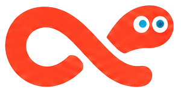
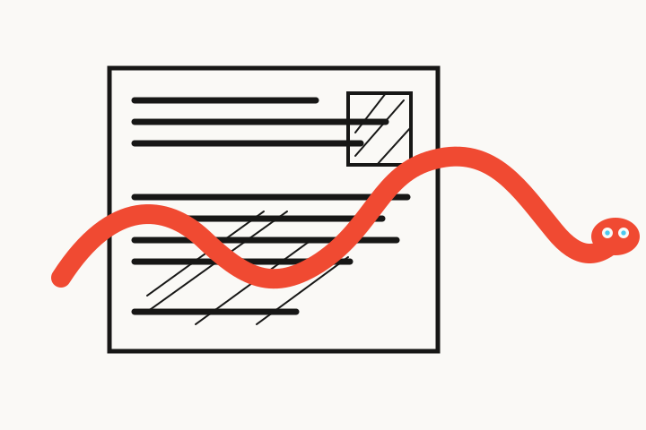
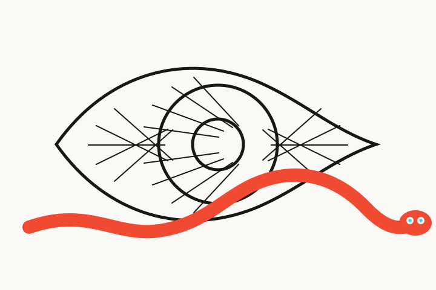
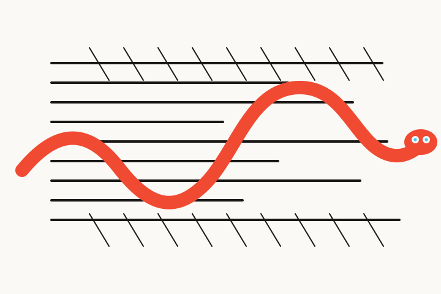

One line. Many places.
Dark surface
Favicon / avatar
Standalone mark

Paper, ink, signal.
Editorial voice, useful body.
Use it when Reporta needs to sound authored, observant, and a little unexpected. Keep headlines short and let the contrast do the work.
Inter is already the product font. It keeps the feed, controls, source names, and metadata quiet and legible around the more expressive display voice.
Let the worm find a way through.
Illustrations
Use one continuous red-orange line as a compositional path: under a headline, behind a card, or around a single object. The head appears only once. Never tile it like decoration.
Photography
Use documentary, close, human images with real texture. Draw the worm as a flat overlay that follows a real edge: a desk, a street, a margin, a hand. Keep opacity at 100% and shadows out.
Product
Use the mark for loading, empty states, and “found something” moments. Keep it small, calm, and useful. The eyes can blink once, never loop aggressively.
Social
Give the worm one job per frame: underline, lead, or escape. Leave generous paper around it. No gradients, stock newsroom imagery, or generic AI sparkles.
Engraving, with one living line.


